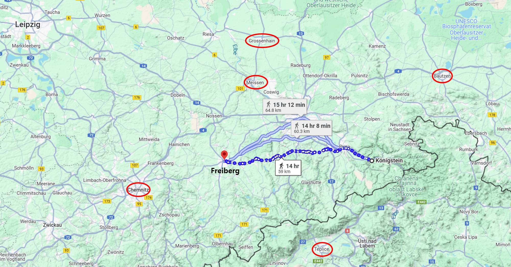
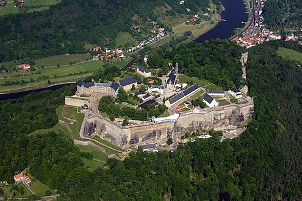
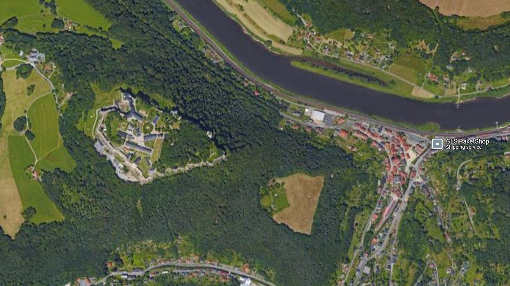
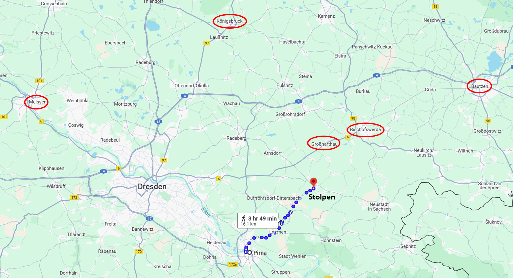
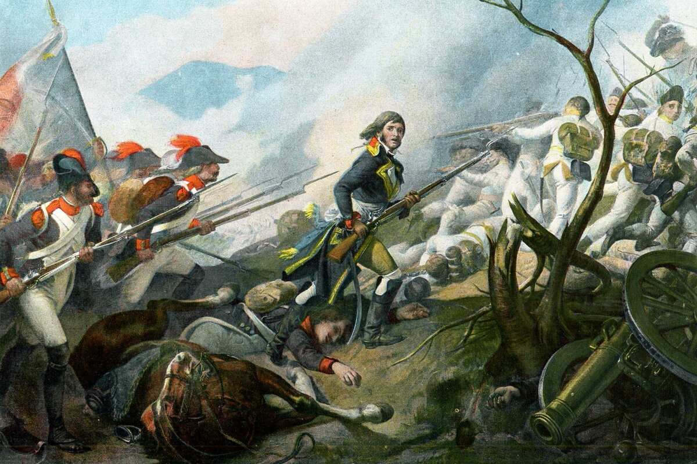
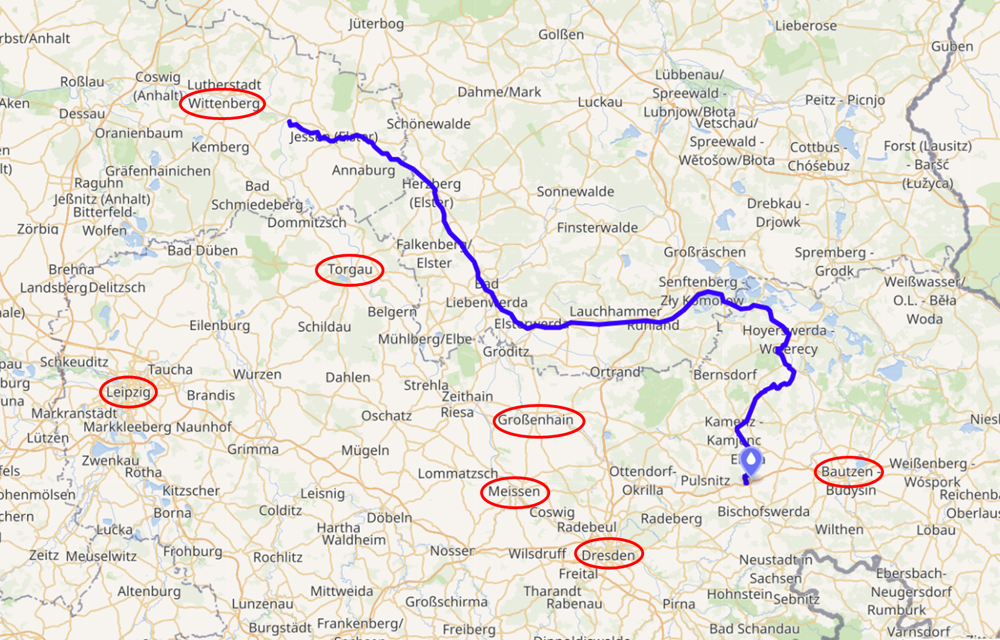
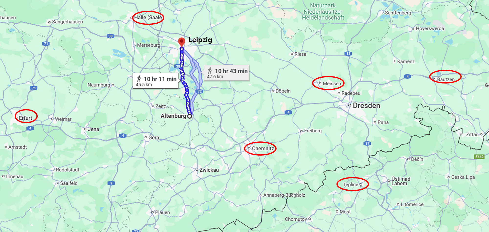
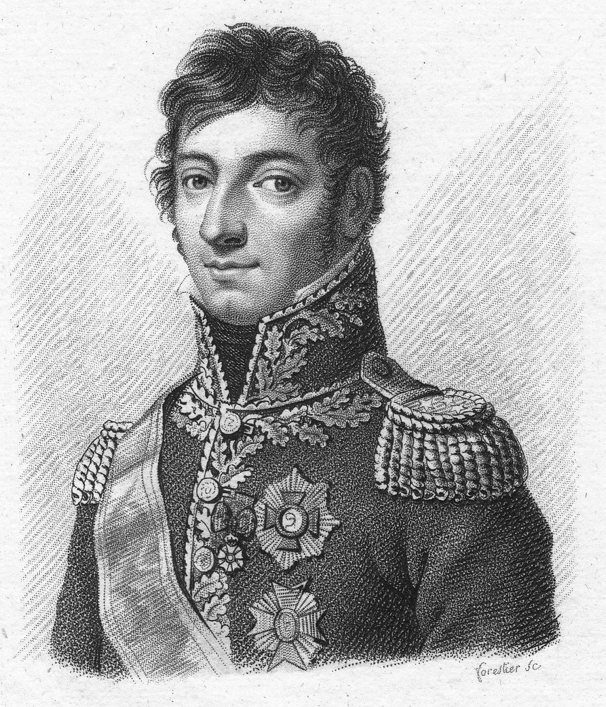
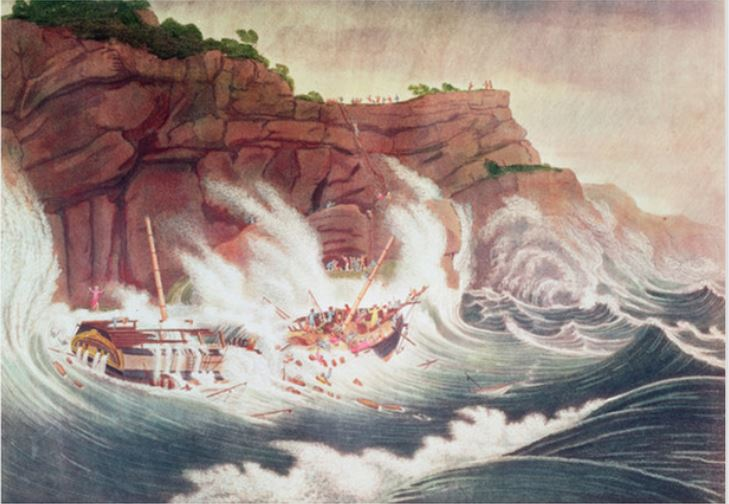

라이프치히로 가는 길 (5) - 우유부단
게시: 2024-11-25T05:53:36+09:00
블뤼허가 이렇게 그로스엔하인의 뮈라를 기습하기 위해 공을 들였으나, 9월 21일 날아온 그로스엔하인에 대한 정찰 보고서는 블뤼허를 당황하게 만들었습니다. 뮈라가 그로스엔하인을 버리고 남서쪽으로 물러났다는 것이었습니다. 바로 그 다음날, 여태까지 후퇴만 거듭하던 막도날로부터 전에 없이 강력한 총공세가 시작되어 블뤼허를 더욱 황당하게 만들었습니다. 대체 무슨 일이 벌어지고 있었던 것일까요? 블뤼허가 이렇게 뮈라를 들이칠 계획을 짜고 있는 동안, 나폴레옹이라고 그냥 앉아서 멍하니 있었던 것은 아니었습니다. 그는 역으로 그로스엔하임의 뮈라를 쾨니히스브뤽으로 진격시킬 생각을 하고 있었습니다. 그에 대응하느라 블뤼허의 전선이 어지러울 때 막도날이 다시 바우첸을 탈환하도록 하는 것이 나폴레옹의 기본 계획이었습니다. 그리고 막도날과 함께 자신이 직접 블뤼허를 공격하기 위해 9월 19일 피르나의 부교를 통해 신참 근위대와 근위 기병대를 엘베강 우안으로 진격시켰고, 그 다음 날에는 자신도 엘베강을 건널 계획이었습니다. 그렇게 블뤼허를 바우첸 동쪽으로 밀어낸 뒤, 그대로 북으로 밀고 올라가 뮈라와 함께 베르나도트를 박살내는 것이 나폴레옹의 목표였습니다. 그러나 마침 19일과 20일 사이에 내린 폭우로 인해 작전이 어렵자, 일단 계획을 보류할 수 밖에 없었습니다. 그런데 그렇게 폭우로 인한 지연이 의외의 결과를 만들었습니다. 나폴레옹은 그 사이에 마음이 바뀌어, 뮈라와 함께 베르나도트를 공격하겠다는 계획을 버리고 일단 방어를 든든히 하겠다는 것으로 마음을 정했습니다. 그래서 뮈라에게는 그로스엔하인에서 철수하여 일단 엘베 강변의 마이센(Meissen)으로 돌아오도록 한 뒤, 막도날의 보버 방면군 소속 군단들을 엘베 강변으로 바싹 후퇴시킬 계획을 세웠습니다. 뿐만 아니라 막도날 휘하의 군단들 중 로리스통의 제5군단을 뚝 떼어 생시르 휘하에 두며, 생시르가 제1, 제14, 제5 군단을 이끌고 엘베강변의 쾨니히슈타인(Königstein)부터 저 멀리 서쪽의 프라이베르크(Freiberg)까지 구간을 방어하도록 하고 켐니츠에는 빅토르의 제2군단을 보낼 계획도 짰습니다. 북동쪽의 마그데부르그(Magdeburg)부터 토르가우(Torgau)까지의 엘베 강변은 네가 제3군단과 함께 베르트랑의 제4군단, 레이니에의 제7군단, 그리고 제3기병군단을 거느리고 지키도록 했습니다.

(쾨니히슈타인부터 프라이베르크까지의 구간입니다. 저 넓은 전선을 규모가 줄어든 3개 군단 약 4~5만 명으로 지키라는 것은 누가 봐도 무리한 일입니다. 더군다나 상대가 근 20만 가까운 보헤미아 방면군일 때는 더욱 그렇습니다.)

(쾨니히슈타인은 전에도 소개드린, 엘베 강변의 작은 마을인데, 그 바로 인근 높은 바위 언덕 위에 쾨니히슈타인 요새가 있는 것으로 유명합니다.)

(구글 지도에서 찾아본 쾨니히슈타인 마을과 쾨니히슈타인 요새입니다.) 나폴레옹이 이렇게 공격 준비를 하다가 갑자기 방어 태세로 전환한다는 것은 매우 이상한 일이긴 했습니다. 그러다 또 바로 다음 날인 21일, 슈톨펜(Stolpen)을 지키고 있던 포니아토프스키의 제8군단으로부터 블뤼허의 병력이 접근 중이라는 보고가 날아오자, 이번에는 갑자기 블뤼허를 공격하겠다고 나섰습니다. 그는 즉각 막도날에게 편지를 보내 다음 날인 22일 낮 12시 경부터 전면적으로 블뤼허를 공격하라고 명령을 내리고는 자신도 친위대 일부를 대동하고 막도날의 사령부로 가겠다고 통보했습니다.

(포니아토프스키가 지키고 있던 슈톨펜의 위치입니다. 나폴레옹도 드레스덴 전투에 앞서 저기를 거쳐 드레스덴에 당도했었습니다.)
여기서 불쌍해진 것은 나폴레옹의 이전 명령에 따라 후퇴 준비를 하고 있던 막도날이었습니다. 그는 이 명령서를 22일 아침 9시 30분경에야 받았는데, 그때는 이미 상당수의 병력을 사람과 말이 먹을 식량을 구하기 위해 사방에 풀어놓은 상태였습니다. 당황한 그는 공격 준비에 시간이 부족하니 공격 개시일을 하루 늦춰달라는 답장을 써서 보냈는데, 그 답장이 나폴레옹을 찾아 떠나는 사이 나폴레옹의 다음 편지가 또 당도했습니다. 내용은 한두 시간 뒤에 나폴레옹이 직접 막도날의 사령부에 도착할 거라는 통보였고, 실제로 나폴레옹은 근위대 1개 대대와 근위 기병대 1개 중대만을 데리고 나타났습니다. 막도날은 진짜 당황했을 것입니다. 그런 상황에서도 나폴레옹 버프는 대단했습니다. 여태까지 계속 밀리기만 하던 막도날의 병사들은 나폴레옹이 친히 나타난 것을 보고 정말 무슨 약이라도 먹은 것처럼 평소보다 갑절은 족히 넘는 용기와 스태미너를 가지고 공격에 나섰습니다. 아마 막도날도 여태까지 자기 지휘를 받을 때는 힘없이 퇴각만 거듭하던 병사들이 단지 나폴레옹이 보고 있다는 이유만으로 이렇게 잘 싸우는 것을 보고 복장이 터졌을 것입니다. 이 공격을 당한 블뤼허 측에서는 프랑스군 쪽에서 외쳐대는 En avant (앙 아방, 전진, 앞으로 등의 뜻) 소리가 하도 거세어 '나폴레옹이 이 공격을 직접 지휘하는 것이 분명하다'라고 판단할 정도였습니다. 당시 전방 언덕에 나와 상황을 살피던 러시아군의 랑제롱 장군도 '타고 있던 말이 느렸다면 프랑스군의 포로가 되었을 것'이라고 기록에 적을 정도로 프랑스군의 공격은 거셌습니다.

(나폴레옹이 직접 나서서 '앙 아방'(En avant)을 외치면 진짜 온몸에 전율이 흐르며 버프를 받을 것 같긴 합니다.) 나폴레옹이 직접 나타났다는 보고를 받은 블뤼허는 그답지 않은 절제심을 발휘하여 트라헨베르크 의정서에 따라 9월 23일 후퇴 명령을 내렸습니다. 그는 바우첸까지 물러선 뒤 보헤미아로 급보를 날려 '나폴레옹이 여기 나타났으니 즉각 북진하여 나폴레옹의 후방을 쳐달라'는 요청을 보냈고, 여차하면 바우첸도 내주고 후퇴할 준비를 했습니다. 그러나 전에 언급했듯이, 보헤미아로 편지가 가려면 적어도 하루 이상의 시간이 필요했습니다. 슈바르첸베르크가 그 편지를 받자마자 즉각 행동에 나선다고 해도 그게 나폴레옹의 진격에 영향을 주려면 며칠이 걸릴 수 밖에 없었습니다. 이런 긴박한 순간에 블뤼허를 구해준 것은 뜻밖에도 베르나도트였습니다. 블뤼허가 결전에 나서지 않고 후퇴하는 것에 짜증을 내고 있던 나폴레옹은 9월 22일 밤을 막도날이 막 탈환한 비숖스베르다(Bischofswerda) 바로 서쪽 마을인 그로스하르트하우(Großharthau)에서 보냈는데 거기로 급보가 날아든 것입니다. 베르나도트가 검은 엘스터(Schwarze Elster, 슈발츠 엘스터) 강과 합류하는 지점의 엘베강에 다리를 완공했다는 소식이었습니다. 이건 베르나도트가 언제든지 나폴레옹의 후방으로 파고 들어 라이프치히 등을 위협할 수 있다는 소리였고, 더 나쁜 것은 더 서쪽의 에르푸르트까지 침투하여 프랑스 본국과의 연락을 두절시킬 수도 있다는 뜻이었습니다. 나폴레옹이 가장 질색하는 것이 바로 그렇게 파리와의 소식이 끊어지는 것이었습니다.

(슈발츠 엘스터(Schwarze Elster, 검은 까치)는 엘베강으로 흘러들어가는 지류입니다. 그러니까 검은 엘스터 강하구 근처에 다리를 놓았다는 것은 토르가우와 그 북쪽의 비텐베르크 사이 어딘가에 부교를 놓았다는 소리였지요.) 그는 다음 날인 23일 진격하는 막도날의 부대들을 따라가면서도 하루 종일 '지금이라도 드레스덴으로 돌아가야 하는 것 아닌가' 하는 고민을 하며 결단을 내리지 못했습니다. 다행히 그 다음 날 좋은 소식도 당도하긴 했습니다. 라이프치히와 드레스덴 사이에서 프랑스군의 후방을 휘젓고 다니며 나폴레옹의 통신망을 교란시키던 틸만(Johann von Thielmann)의 코삭 및 작센 유격대를 르페브르-데누엣(Charles Lefebvre-Desnouettes)이 지휘하는 프랑스군 기병대가 격파했다는 소식이었습니다. 일단 후방 통신망이 안정되었다니 다행이긴 했지만, 나폴레옹의 고민은 계속되었습니다. 이유는 막도날의 보버 방면군 약 6만의 상황을 나폴레옹이 직접 보았기 때문이었습니다. 이들은 비록 나폴레옹 버프를 받아 초반에 초인적인 기세를 올리긴 했지만, 눈에 띄게 스태미너를 잃어가고 있었습니다. 나폴레옹이 보기에도, 이들은 식량 부족 때문에 상태가 말이 아니었습니다. 바우첸 일대는 지난 여름부터 연합군과 그랑다르메가 번갈아 점령하며 식량을 샅샅이 훑어먹은 상태라서 먹을 것이 거의 남아있지 않았고, 그랑다르메에는 여전히 기병대가 부족했기 때문에 그 일대엔 코삭 기병들이 판을 치고 다니고 있어서 막도날의 병사들은 본대 멀리까지 흩어져서 식량수집 활동을 할 수가 없었습니다.

(9월 24일 나폴레옹에게 도착한 르페브르-데누엣의 승전 보고서가 무색하게도, 바로 며칠 뒤인 9월 28일 르페브르-데누엣의 8천에 달하는 병력은 알텐부르크(Altenburg) 외곽에서 불과 2천 정도에 불과한 틸만의 유격대에게 완벽한 기습을 당해 2천의 병력을 잃는 참패를 당한 뒤 알텐부르크까지 빼앗기고 맙니다. 이 패전은 그렇쟎아도 뒤통수가 편치 않았던 나폴레옹의 심기를 더욱 어지럽게 만듭니다. 바로 몇 달 전까지 작센군의 주요 장군이던 틸만이 조국 해방의 기치를 내세우며 러시아군으로 넘어간 뒤 익숙한 지형지물과 주민들의 협조를 이용하여 큰 공을 세운 것입니다. 위 지도는 알텐베르크의 위치를 보여줍니다.)

(이 패배의 주인공 르페브르-데누엣(Charles Lefebvre-Desnouettes, s는 묵음입니다)은 나폴레옹보다 4살 연하였는데, 특이한 점은 비겁한 탈출을 자주 했다는 것입니다. 그는 1808년 12월 스페인에서 싸우다 영국군의 포로가 되어 영국으로 압송된 뒤, 거기서 장교의 명에를 걸고 탈출하지 않겠다는 서약을 한 뒤 가석방 상태로 지냈고, 이때 와이프인 스테파니(Stephanie)까지 데려와서 같이 살았습니다. 그런데 2년 만인 1811년, 약속을 어기고 국외로 탈출하여 프랑스로 귀국하여 영국의 큰 비난을 샀습니다. 그는 이후 근위 기병대 지휘관으로 러시아 원정에도 참전했고 프랑스 방어전에서도 잘 싸웠습니다. 그런데 워털루 전투에서 다시 영국군의 포로가 되었습니다. 전투 현장에서 탈출하지 않겠다는 서약을 한 그는 영국 용기병(dragoon) 한 명의 감시를 받으며 말을 탄 채로 포로 집결지로 이동했는데, 그 영국 용기병이 잠시 말에서 내린 틈을 타 또 서약을 깨고 재빨리 말을 달려 탈출을 시도했습니다. 그런데 그 영국 용기병이 의외의 뛰어난 라이더였는지, 번개처럼 달려와 군도로 그의 이마를 타격한 뒤 다시 포로로 잡았다고 합니다.)

(르페브르-데누엣의 탈출기는 거기서 끝나지 않습니다. 이후 백일천하에서 나폴레옹에게 붙은 죄를 물어 그에게 사형 선고가 내려졌으나, 그는 역시나 다시 탈출하여 이번에는 미국으로 갔습니다. 거기서 농사를 짓던 그는 꾸준히 프랑스 부르봉 왕가에 로비 활동을 벌여 결국 귀국 허가를 받아냈습니다. 그러나 불행히도 그가 타고 대서양을 건너던 미국 우편선 알비온(Albion)은 1822년 4월 아일랜드 남해안에서 난파되었고, 그도 여기서는 탈출하지 못하고 사망했습니다. 이 그림은 알비온 호의 난파 장면을 그린 것입니다.) 결국 나폴레옹은 결전을 사양하고 후퇴를 택한 블뤼허에 대한 덧없는 추격을 포기합니다. 아울러, 아예 엘베강 동쪽의 모든 지역에서 완전히 철수하기로 합니다. 어차피 엘베강 동쪽는 의미있는 전략 요충지는 남아있지 않았기 때문이기도 했지만, 나폴레옹이 겉으로 내세운 이유가 오히려 더 우려스러웠습니다. 이대로는 3개 방면의 연합군 어느 누구와도 결판을 낼 수가 없으니, 일단 엘베강을 연합군에게 미끼로 던져주고 적이 어떻게 나오는지에 따라서 다음 작전을 짜겠다는 것이었습니다. 이는 트라헨베르크 의정서에 따라 3개 방면군이 나폴레옹의 측면과 후방을 물어뜯어 교란한다는 연합군의 전략이 실제로 잘 먹히고 있다는 뜻이었을 뿐만 아니라, 그에 대해 나폴레옹은 별다른 대응책을 내놓지 못하고 전쟁의 주도권을 완전히 연합군 쪽에 넘겨주었다는 것이었습니다. 이건 결코 나폴레옹의 스타일이 아니었습니다. 나폴레옹은 언제나 주도권을 쥐고 공세를 취하는 사람이었습니다. 이런 변화보다 어쩌면 더 나쁜 변화도 있었습니다. 나폴레옹은 어려운 상황에서도 그 뛰어난 두뇌로 심사숙고 끝에 돌파구를 찾아내는 천재이기도 했지만, 신속한 결단과 불굴의 의지로 판을 풀어가는 용장이기도 했습니다. 그런데 9월 들어서면서 그는 눈에 띄게 우유부단해졌습니다. 얼츠거비어거 산맥을 넘어 보헤미아로 쳐들어가려 하다가 포기하고, 블뤼허를 치려다 포기하고, 다시 베르나도트를 치려다 포기하고, 다시 블뤼허를 치려다 포기하는 등, 마치 새가슴 투자자가 주가 하락시에 손절을 못하고 쩔쩔 매는 것처럼 나폴레옹은 결단을 내리지 못하고 오락가락하는 모습을 보여주었습니다. 그리고 그런 우유부단함이 결국 라이프치히의 비극을 만들어냅니다. Source : The Life of Napoleon Bonaparte, by William Milligan Sloane Napoleon and the Struggle for Germany, by Leggiere, Michael V With Napoleon's Guns by Colonel Jean-Nicolas-Auguste Noël https://www.britannica.com/event/Napoleonic-Wars/Dispositions-for-the-autumn-campaign http://www.historyofwar.org/articles/campaign_leipzig.html https://en.wikipedia.org/wiki/K%C3%B6nigstein_Fortress https://en.wikipedia.org/wiki/Black_Elster https://en.wikipedia.org/wiki/Battle_of_Altenburg https://en.wikipedia.org/wiki/Charles_Lefebvre-Desnouettes https://www.chroniquesdebresse.fr/Le-passage-de-Napoleon-1er-a-Bourg-en-Bresse-en-1805